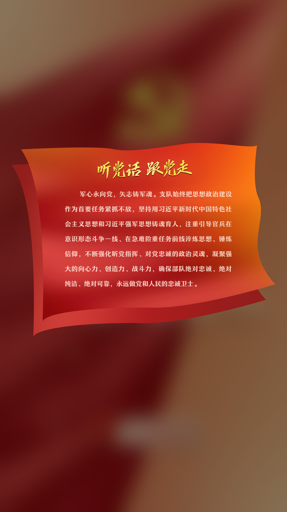
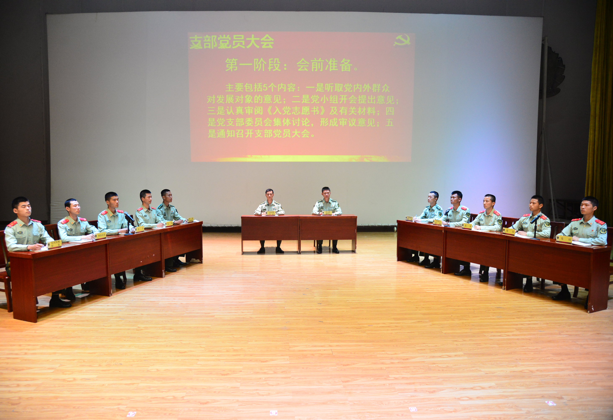
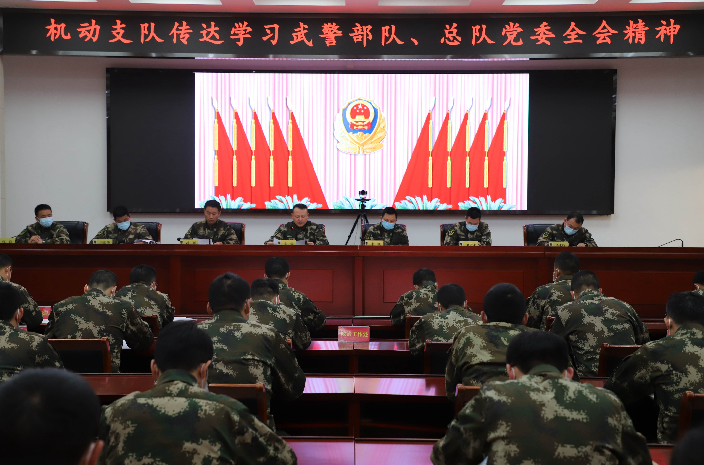
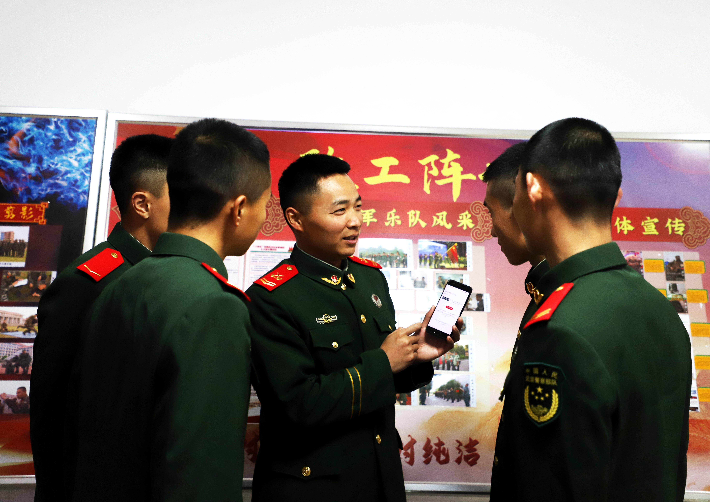
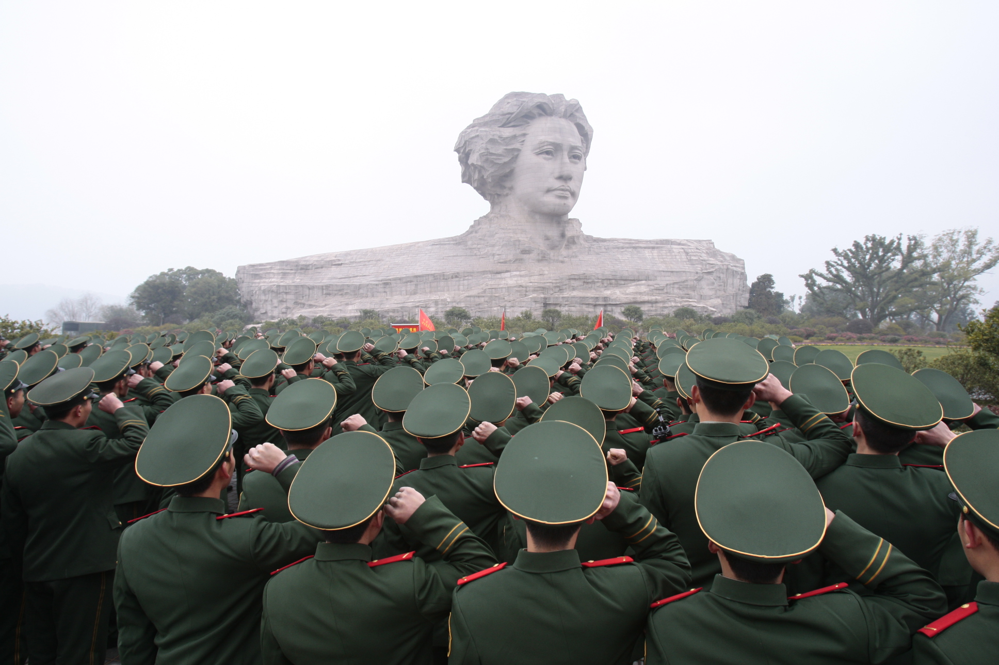
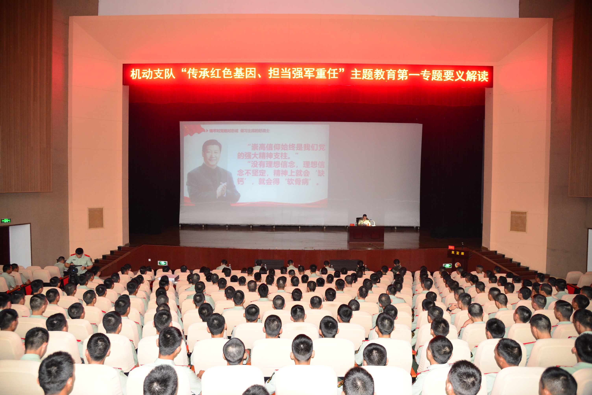
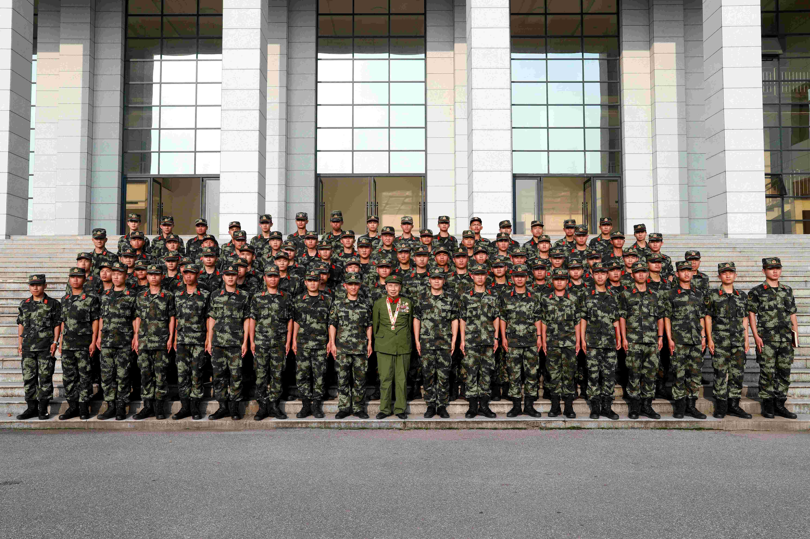

1/8
 2016年6月22日，支队组织2016年度入党积极分子和士官支委培训调色2
2016年6月22日，支队组织2016年度入党积极分子和士官支委培训调色2
2/8
 2016年7月17日，支队组织全体党员和党员发展对象在抗洪前线进行宣誓仪式
2016年7月17日，支队组织全体党员和党员发展对象在抗洪前线进行宣誓仪式
3/8
 2017年12月31日，直属支队正式更名为机动支队
2017年12月31日，直属支队正式更名为机动支队
4/8
 2018年5月30日，支队热烈庆祝机动支队第一届党代会胜利召开合影留念（调色1）
2018年5月30日，支队热烈庆祝机动支队第一届党代会胜利召开合影留念（调色1）
5/8
 2019年12月5日，支队组织召开“不忘初心、牢记使命”专题民主生活会
2019年12月5日，支队组织召开“不忘初心、牢记使命”专题民主生活会
6/8

2019年5月9日，支队组织开展《纲要》集训成果演示，图为党员大会演示
7/8

2021年1月18日，机动支队传达学习武警部队、总队党委四届四次（扩大）会议精神
8/8

2021年3月4日，“红肩章”理论教员为战士们讲党史
1/8

2011年2月16日，支队新训大队在长沙橘子洲头举行宣誓仪式
2/8
 2013年5月27日，支队原警营之声（现军营之声）广播站正式开播
2013年5月27日，支队原警营之声（现军营之声）广播站正式开播
3/8
 2012年7月17日，支队组织忠诚卫士歌曲大家唱歌咏比赛
2012年7月17日，支队组织忠诚卫士歌曲大家唱歌咏比赛
4/8
 2013年7月，支队给任弼时纪念馆授牌作为支队政治教育基地
2013年7月，支队给任弼时纪念馆授牌作为支队政治教育基地
5/8

2018年5月11日，支队组织“传承红色基因，担当强军重任”主题教育第一专题要义解读
6/8
 2019年8月16日，支队组织官兵到陈树湘纪念馆参观，学习老一辈革命家奉献精神
2019年8月16日，支队组织官兵到陈树湘纪念馆参观，学习老一辈革命家奉献精神
7/8

5月22日支队邀请抗美援朝老兵许辅志（原中元山英雄连政治指导员）为官兵上党史军史教育课，图为许辅志与官兵合影留念
8/8
 2021年8月30日，支队组织开展退伍季“红色湖湘铸忠诚“系列活动，图为优秀士兵理论骨干围绕“奋斗”作交流发言
2021年8月30日，支队组织开展退伍季“红色湖湘铸忠诚“系列活动，图为优秀士兵理论骨干围绕“奋斗”作交流发言